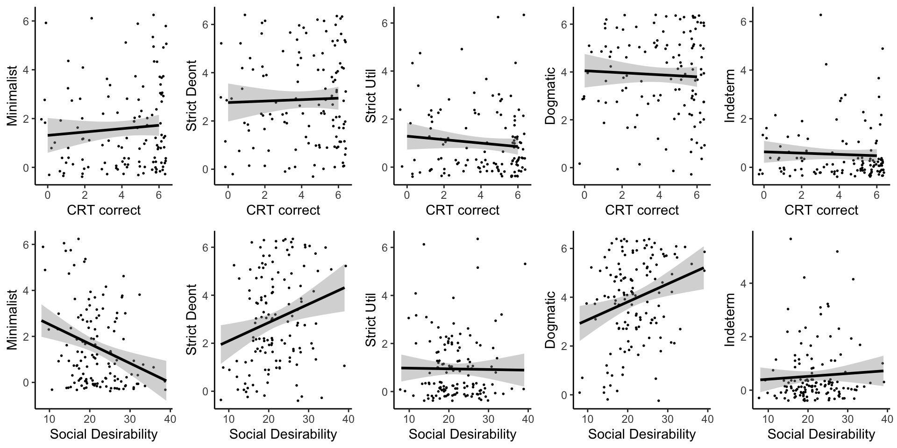
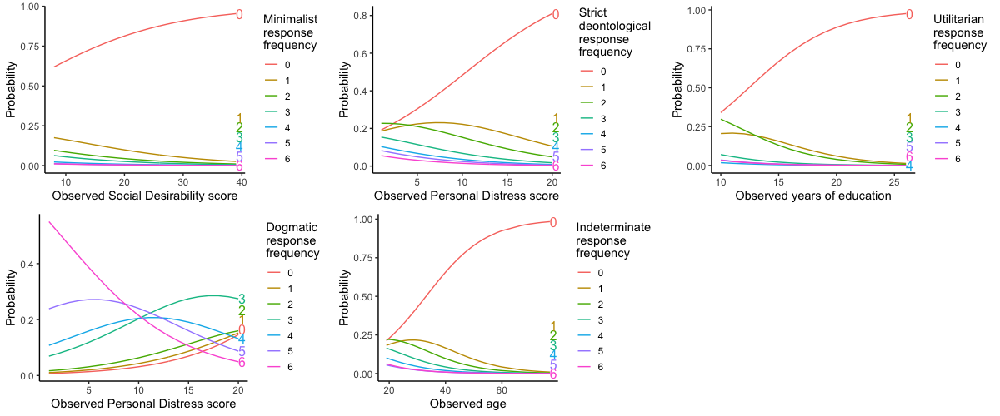
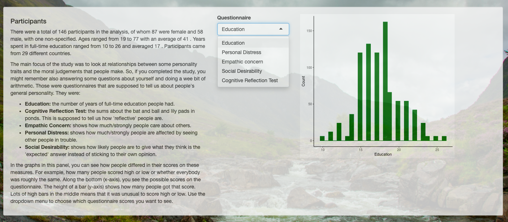

Data analysis and visualisation
Income inequality in the UK
Since 1980, inequality in the UK has risen drastically. While the country overall can be said on average to be earning more, the gains have overwhelmingly gone to the better off. Those on lower incomes have not seen the same increase in their earnings.
The data presented here are a tiny selection from the World Inequality Database, a great resource for understanding inequality around the globe and for practising data visualisation.

Are reflective people 'moral minimalists'?
For my MSc Psychology dissertation, I replicated a study considering differences in moral judgements between those who tend to be 'reflective' thinkers and those considered more 'intuitive'.
Here you can see the key result: there was no correlation between scores on the Cognitive Reflection Test and 'moral minimalism' (a particular type of moral judgement). However, there were correlations between moral judgement types and the Social Desirability scale.

Continuing, and extending, the replication of the earlier study, I conducted ordinal logistic regressions. This led to visualisations of the relative probabilities of 6 response types, given particular scores in other measures (and all other variables remaining constant):

For more detail, further analysis and interactive visualisations, please visit my Shiny page, MSc Results:
